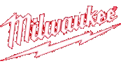

Desk / Printed parts + wood
Apex monitor riser
Four printed legs and a wooden board raise the monitor and leave useful space underneath. The printed part connects the idea to an everyday material.
Read the design notes ↗
Behind the builds
How I turn an idea into a prototype,
and what I learn along the way.
The useful part is the process: sketching, printing, testing and making the next change.
Ideas become real. Then improve a little.

Work out what needs to move, fit or connect.

Make something physical to test the idea.

Check the fit and the mechanism.

Keep what works. Change what does not.
A closer look at what the printed part does.
Desk / Printed parts + wood
Four printed legs and a wooden board raise the monitor and leave useful space underneath. The printed part connects the idea to an everyday material.
Read the design notes ↗
Practical / Shared on MakerWorld
A small printed adapter for Thermacell fuel cartridges, and my biggest hobby win so far. Sharing it on MakerWorld helps fund filament and materials for the next project.
See the model on MakerWorld ↗Still in progress. Still being figured out.
| Build | What I’m exploring | Status | Build notes |
|---|---|---|---|
| SaberVac | Housing, filter access and assembly | In progress | Read build notes ↗ |
| Utility knife prototype | Mechanism and tolerances | In progress | Read build notes ↗ |
| Mechanical pencil | Twist advance and printed parts | In progress | Read build notes ↗ |
The latest documented prototype work — follow each build for its dated updates.
Another way to build something and learn from it.

Independent AI orchestration explored through applied learning.
Home upkeep, kitchen planning and shared household coordination.

Voice to text using NVIDIA Parakeet models on the device.
A React and Sanity website I hand-built for a friend.
Tools I use
I create my own designs and models,
then make something physical to test.
The next iteration starts with what I learn.
Where I create my own designs and 3D models, working through the shape and how the parts fit together.

A 40-watt diode laser in the workshop, turning my own designs into something tangible.

Part of my toolbox for hands-on renovation work, including a full-house renovation.
Brand names identify tools I use; no sponsorship or endorsement is implied. Autodesk and Autodesk Fusion are trademarks of Autodesk, Inc., and/or its subsidiaries and/or affiliates in the USA and other countries. Other brand names belong to their respective owners.